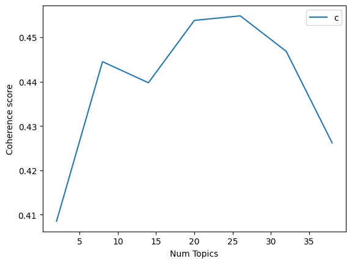

6. Klasifikasi Berita menggunakan Fitur Latent Dirichlet Allocation#
import pandas as pd
data = pd.read_csv('cnn_tokenized.csv')
data.head()
---------------------------------------------------------------------------
FileNotFoundError Traceback (most recent call last)
Cell In[1], line 2
1 import pandas as pd
----> 2 data = pd.read_csv('cnn_tokenized.csv')
4 data.head()
File ~\AppData\Local\Programs\Python\Python313\Lib\site-packages\pandas\io\parsers\readers.py:1026, in read_csv(filepath_or_buffer, sep, delimiter, header, names, index_col, usecols, dtype, engine, converters, true_values, false_values, skipinitialspace, skiprows, skipfooter, nrows, na_values, keep_default_na, na_filter, verbose, skip_blank_lines, parse_dates, infer_datetime_format, keep_date_col, date_parser, date_format, dayfirst, cache_dates, iterator, chunksize, compression, thousands, decimal, lineterminator, quotechar, quoting, doublequote, escapechar, comment, encoding, encoding_errors, dialect, on_bad_lines, delim_whitespace, low_memory, memory_map, float_precision, storage_options, dtype_backend)
1013 kwds_defaults = _refine_defaults_read(
1014 dialect,
1015 delimiter,
(...) 1022 dtype_backend=dtype_backend,
1023 )
1024 kwds.update(kwds_defaults)
-> 1026 return _read(filepath_or_buffer, kwds)
File ~\AppData\Local\Programs\Python\Python313\Lib\site-packages\pandas\io\parsers\readers.py:620, in _read(filepath_or_buffer, kwds)
617 _validate_names(kwds.get("names", None))
619 # Create the parser.
--> 620 parser = TextFileReader(filepath_or_buffer, **kwds)
622 if chunksize or iterator:
623 return parser
File ~\AppData\Local\Programs\Python\Python313\Lib\site-packages\pandas\io\parsers\readers.py:1620, in TextFileReader.__init__(self, f, engine, **kwds)
1617 self.options["has_index_names"] = kwds["has_index_names"]
1619 self.handles: IOHandles | None = None
-> 1620 self._engine = self._make_engine(f, self.engine)
File ~\AppData\Local\Programs\Python\Python313\Lib\site-packages\pandas\io\parsers\readers.py:1880, in TextFileReader._make_engine(self, f, engine)
1878 if "b" not in mode:
1879 mode += "b"
-> 1880 self.handles = get_handle(
1881 f,
1882 mode,
1883 encoding=self.options.get("encoding", None),
1884 compression=self.options.get("compression", None),
1885 memory_map=self.options.get("memory_map", False),
1886 is_text=is_text,
1887 errors=self.options.get("encoding_errors", "strict"),
1888 storage_options=self.options.get("storage_options", None),
1889 )
1890 assert self.handles is not None
1891 f = self.handles.handle
File ~\AppData\Local\Programs\Python\Python313\Lib\site-packages\pandas\io\common.py:873, in get_handle(path_or_buf, mode, encoding, compression, memory_map, is_text, errors, storage_options)
868 elif isinstance(handle, str):
869 # Check whether the filename is to be opened in binary mode.
870 # Binary mode does not support 'encoding' and 'newline'.
871 if ioargs.encoding and "b" not in ioargs.mode:
872 # Encoding
--> 873 handle = open(
874 handle,
875 ioargs.mode,
876 encoding=ioargs.encoding,
877 errors=errors,
878 newline="",
879 )
880 else:
881 # Binary mode
882 handle = open(handle, ioargs.mode)
FileNotFoundError: [Errno 2] No such file or directory: 'cnn_tokenized.csv'
data_text = data[:300000][['isi_clean']]
data_text.head()
| isi_clean | |
|---|---|
| 0 | kpk menyebut agen travel haji menjual kuota ha... |
| 1 | kpk eks menag yaqut menerbitkan sk kuota haji ... |
| 2 | keberadaan terpidana silfester matutina mister... |
| 3 | banjir melanda bali jembrana denpasar menyebab... |
| 4 | kpk memeriksa dirjen haji hilman latief jam te... |
data_text['index'] = data_text.index
documents = data_text
documents.head()
| isi_clean | index | |
|---|---|---|
| 0 | kpk menyebut agen travel haji menjual kuota ha... | 0 |
| 1 | kpk eks menag yaqut menerbitkan sk kuota haji ... | 1 |
| 2 | keberadaan terpidana silfester matutina mister... | 2 |
| 3 | banjir melanda bali jembrana denpasar menyebab... | 3 |
| 4 | kpk memeriksa dirjen haji hilman latief jam te... | 4 |
len(documents)
800
import gensim
from gensim.utils import simple_preprocess
from nltk.corpus import stopwords
from nltk.stem.porter import *
import numpy as np
import nltk
nltk.download('wordnet')
[nltk_data] Downloading package wordnet to /root/nltk_data...
[nltk_data] Package wordnet is already up-to-date!
True
nltk.download('stopwords')
factory = StemmerFactory()
stemmer = factory.create_stemmer()
stop_words = stopwords.words('indonesian')
def stemming_indonesia(text):
return stemmer.stem(text)
def preprocess(text):
result = []
for token in gensim.utils.simple_preprocess(str(text)): # tokenisasi
if token not in stop_words and len(token) > 3:
result.append(stemming_indonesia(token))
return result
[nltk_data] Downloading package stopwords to /root/nltk_data...
[nltk_data] Package stopwords is already up-to-date!
import pandas as pd
document = pd.read_csv('cnn_tokenized.csv')
print("\nTampilan kolom 'isi_clean' dan 'isi_stemmed':")
print(document[['isi_clean', 'isi_stemmed']].head())
print("\nJumlah data:", document.shape)
Tampilan kolom 'isi_clean' dan 'isi_stemmed':
isi_clean \
0 kpk menyebut agen travel haji menjual kuota ha...
1 kpk eks menag yaqut menerbitkan sk kuota haji ...
2 keberadaan terpidana silfester matutina mister...
3 banjir melanda bali jembrana denpasar menyebab...
4 kpk memeriksa dirjen haji hilman latief jam te...
isi_stemmed
0 kpk sebut agen travel haji jual kuota haji khu...
1 kpk eks menag yaqut terbit sk kuota haji tamba...
2 ada pidana silfester matutina misteri sorot pu...
3 banjir landa bal jembrana denpasar sebab orang...
4 kpk periksa dirjen haji hilman latief jam kait...
Jumlah data: (800, 9)
document_num = 500
# Pastikan indexnya tidak lebih besar dari jumlah baris
if document_num < len(document):
doc_sample = document.iloc[document_num]['isi_clean']
print("\nOriginal document (isi_clean):")
print(doc_sample)
# Split kata berdasarkan spasi
words = doc_sample.split()
print("\nTokenized words:")
print(words)
# Karena sudah di-stemming, kita hanya tampilkan kolom hasil stemming
print("\nHasil stemming (isi_stemmed):")
print(document.iloc[document_num]['isi_stemmed'])
else:
print(f"\n⚠️ Nomor {document_num} melebihi jumlah baris ({len(document)})")
Original document (isi_clean):
pembaruan toyota innova zenix fokus sistem hiburan kabin
Tokenized words:
['pembaruan', 'toyota', 'innova', 'zenix', 'fokus', 'sistem', 'hiburan', 'kabin']
Hasil stemming (isi_stemmed):
baru toyota innova zenix fokus sistem hibur kabin
print(document.columns.tolist())
['id', 'judul', 'isi_singkat', 'kategori', 'isi_clean', 'isi_nosymbol', 'isi_spellchecked', 'isi_stemmed', 'isi_tokens']
process_docs = document['isi_stemmed'].map(preprocess)
process_docs[:10]
| isi_stemmed | |
|---|---|
| 0 | [agen, travel, haji, jual, kuota, haji, khusus... |
| 1 | [menag, yaqut, terbit, kuota, haji, ribu, kuot... |
| 2 | [pidana, silfester, matutina, misteri, sorot, ... |
| 3 | [banjir, landa, jembrana, denpasar, orang, tin... |
| 4 | [periksa, dirjen, haji, hilman, latief, kait, ... |
| 5 | [warga, china, libat, curi, rumah, kosong, tan... |
| 6 | [orang, lapor, hilang, gelombang, demontrasi, ... |
| 7 | [tunjang, rumah, anggota, dewan, sorot, tunjan... |
| 8 | [duga, korupsi, kuota, haji, menteri, agama, l... |
| 9 | [hadap, menko, yuril, direktur, lokataru, delp... |
Get a BOW Dict from data
dic = gensim.corpora.Dictionary(process_docs)
count = 0
for k, v in dic.items():
print(k, v)
count += 1
if count > 10:
break
0 agen
1 beda
2 haji
3 harga
4 jemaah
5 jual
6 juta
7 khusus
8 kuota
9 travel
10 asosiasi
filter the dict
dic.filter_extremes(no_below=15, no_above=0.1, keep_n=100000)
Convert document into BOW format by doc2bow
bow_corpus = [dic.doc2bow(doc) for doc in process_docs]
document_num = 34
bow_doc = bow_corpus[document_num]
if len(bow_doc) == 0:
print(f"Dokumen ke-{document_num} kosong.")
else:
print(f"=== Isi dokumen ke-{document_num} ===\n")
for word_id, freq in bow_doc:
print(f"Word ID {word_id} (\"{dictionary[word_id]}\") appears {freq} time(s).")
=== Isi dokumen ke-34 ===
Word ID 21 ("buntut") appears 1 time(s).
Word ID 30 ("sorot") appears 1 time(s).
Word ID 34 ("dunia") appears 2 time(s).
TF-IDF on our document set
tfidf = gensim.models.TfidfModel(bow_corpus)
corpus_tfidf = tfidf[bow_corpus]
for docu in corpus_tfidf:
print(docu)
break
[(0, 0.3974561018793844), (1, 0.8207453427605151), (2, 0.41037267138025757)]
Running LDA using Bag of Words data
lda_model = gensim.models.LdaMulticore(bow_corpus, num_topics=10, id2word = dic, passes = 2, workers=2)
WARNING:gensim.models.ldamulticore:too few updates, training might not converge; consider increasing the number of passes or iterations to improve accuracy
for idx, topic in lda_model.print_topics():
print("Topic: {} \nWords: {}".format(idx, topic))
print("\n")
Topic: 0
Words: 0.107*"timnas" + 0.078*"lebanon" + 0.064*"fifa" + 0.064*"matchday" + 0.058*"laga" + 0.052*"orang" + 0.049*"lawan" + 0.045*"kerja" + 0.043*"nasional" + 0.035*"main"
Topic: 1
Words: 0.132*"presiden" + 0.081*"salah" + 0.078*"milik" + 0.045*"wakil" + 0.043*"subianto" + 0.042*"prabowo" + 0.032*"anak" + 0.030*"duga" + 0.029*"menteri" + 0.028*"jakarta"
Topic: 2
Words: 0.097*"korea" + 0.096*"piala" + 0.095*"timnas" + 0.079*"asia" + 0.072*"kualifikasi" + 0.063*"selatan" + 0.040*"laga" + 0.030*"selasa" + 0.028*"jabat" + 0.026*"lawan"
Topic: 3
Words: 0.078*"israel" + 0.062*"serang" + 0.054*"dunia" + 0.050*"mobil" + 0.049*"gaza" + 0.046*"selasa" + 0.045*"temu" + 0.039*"warga" + 0.037*"doha" + 0.036*"qatar"
Topic: 4
Words: 0.098*"film" + 0.081*"sosial" + 0.079*"media" + 0.078*"jakarta" + 0.061*"usaha" + 0.040*"anak" + 0.033*"resmi" + 0.028*"wakil" + 0.025*"aksi" + 0.019*"piala"
Topic: 5
Words: 0.125*"september" + 0.070*"lapor" + 0.067*"main" + 0.057*"total" + 0.045*"nilai" + 0.044*"serang" + 0.037*"hasil" + 0.030*"malam" + 0.029*"kait" + 0.025*"timnas"
Topic: 6
Words: 0.085*"rumah" + 0.080*"demo" + 0.057*"resmi" + 0.057*"juta" + 0.057*"menteri" + 0.055*"jabat" + 0.052*"aksi" + 0.048*"jalan" + 0.043*"selasa" + 0.042*"agustus"
Topic: 7
Words: 0.092*"senin" + 0.063*"listrik" + 0.058*"lebanon" + 0.051*"timnas" + 0.051*"ribu" + 0.050*"mobil" + 0.044*"tahan" + 0.044*"jawa" + 0.042*"malam" + 0.041*"harga"
Topic: 8
Words: 0.101*"makan" + 0.073*"perintah" + 0.053*"perdana" + 0.041*"harga" + 0.040*"menteri" + 0.039*"israel" + 0.038*"qatar" + 0.038*"serang" + 0.033*"sehat" + 0.032*"salah"
Topic: 9
Words: 0.107*"menteri" + 0.076*"purbaya" + 0.076*"sadewa" + 0.076*"yudhi" + 0.071*"uang" + 0.063*"mulyani" + 0.061*"prabowo" + 0.054*"presiden" + 0.052*"menkeu" + 0.041*"ganti"
Topic coherence
from gensim.models import CoherenceModel
coherence_model_lda = CoherenceModel(model=lda_model, texts=process_docs, dictionary=dic, coherence='c_v')
coherence_lda = coherence_model_lda.get_coherence()
print('\nCoherence Score: ', coherence_lda)
Coherence Score: 0.4634612525745666
from gensim.models import CoherenceModel
coherence_model_lda = CoherenceModel(model=lda_model, texts=processed_docs, dictionary=dictionary, coherence="u_mass")
coherence_lda = coherence_model_lda.get_coherence()
print('\nCoherence Score: ', coherence_lda)
Coherence Score: -17.929826993494324
find the optimal number of topics
def compute_coherence_values(dictionary, corpus, texts, limit, start=2, step=3):
coherence_values = []
model_list = []
for num_topics in range(start, limit, step):
model=gensim.models.LdaMulticore(corpus=corpus, id2word=dic, num_topics=num_topics)
model_list.append(model)
coherencemodel = CoherenceModel(model=model, texts=texts, dictionary=dic, coherence='c_v')
coherence_values.append(coherencemodel.get_coherence())
return model_list, coherence_values
model_list, coherence_values = compute_coherence_values(dictionary=dic, corpus=bow_corpus, texts=process_docs, start=2, limit=40, step=6)
WARNING:gensim.models.ldamulticore:too few updates, training might not converge; consider increasing the number of passes or iterations to improve accuracy
WARNING:gensim.models.ldamulticore:too few updates, training might not converge; consider increasing the number of passes or iterations to improve accuracy
WARNING:gensim.models.ldamulticore:too few updates, training might not converge; consider increasing the number of passes or iterations to improve accuracy
WARNING:gensim.models.ldamulticore:too few updates, training might not converge; consider increasing the number of passes or iterations to improve accuracy
WARNING:gensim.models.ldamulticore:too few updates, training might not converge; consider increasing the number of passes or iterations to improve accuracy
WARNING:gensim.models.ldamulticore:too few updates, training might not converge; consider increasing the number of passes or iterations to improve accuracy
WARNING:gensim.models.ldamulticore:too few updates, training might not converge; consider increasing the number of passes or iterations to improve accuracy
import matplotlib.pyplot as plt
limit=40; start=2; step=6;
x = range(start, limit, step)
plt.plot(x, coherence_values)
plt.xlabel("Num Topics")
plt.ylabel("Coherence score")
plt.legend(("coherence_values"), loc='best')
plt.show()

Running LDA using TF-IDF
lda_model_tfidf = gensim.models.LdaMulticore(corpus_tfidf, num_topics=10, id2word = dic, passes = 2, workers=4)
WARNING:gensim.models.ldamulticore:too few updates, training might not converge; consider increasing the number of passes or iterations to improve accuracy
for idx, topic in lda_model_tfidf.print_topics(-1):
print("Topic: {} Word: {}".format(idx, topic))
print("\n")
Topic: 0 Word: 0.132*"kendara" + 0.103*"mobil" + 0.073*"jual" + 0.066*"persen" + 0.047*"listrik" + 0.047*"menteri" + 0.045*"usaha" + 0.039*"milik" + 0.025*"agustus" + 0.023*"kait"
Topic: 1 Word: 0.073*"negara" + 0.072*"serang" + 0.055*"israel" + 0.045*"qatar" + 0.045*"udara" + 0.043*"milik" + 0.042*"minggu" + 0.041*"doha" + 0.037*"lapor" + 0.036*"kota"
Topic: 2 Word: 0.111*"temu" + 0.110*"orang" + 0.073*"anak" + 0.067*"ribu" + 0.045*"jawa" + 0.044*"demo" + 0.042*"jakarta" + 0.034*"korban" + 0.028*"usaha" + 0.022*"menteri"
Topic: 3 Word: 0.065*"sehat" + 0.058*"duga" + 0.047*"kerja" + 0.047*"sosial" + 0.047*"media" + 0.043*"menteri" + 0.042*"prabowo" + 0.035*"subianto" + 0.033*"presiden" + 0.031*"harga"
Topic: 4 Word: 0.087*"resmi" + 0.075*"timnas" + 0.053*"piala" + 0.049*"asia" + 0.048*"matchday" + 0.048*"fifa" + 0.048*"laga" + 0.044*"listrik" + 0.043*"kualifikasi" + 0.038*"makan"
Topic: 5 Word: 0.096*"hasil" + 0.093*"jalan" + 0.067*"perintah" + 0.052*"korea" + 0.044*"gaza" + 0.039*"menkeu" + 0.035*"kait" + 0.034*"sadewa" + 0.034*"yudhi" + 0.033*"israel"
Topic: 6 Word: 0.094*"salah" + 0.071*"september" + 0.055*"malam" + 0.053*"presiden" + 0.053*"main" + 0.052*"senin" + 0.051*"kenal" + 0.046*"total" + 0.035*"lebanon" + 0.028*"timnas"
Topic: 7 Word: 0.080*"jakarta" + 0.054*"juta" + 0.053*"duga" + 0.048*"harga" + 0.044*"kait" + 0.040*"dunia" + 0.037*"timnas" + 0.035*"kualifikasi" + 0.035*"selatan" + 0.033*"piala"
Topic: 8 Word: 0.121*"rumah" + 0.073*"nilai" + 0.063*"aksi" + 0.043*"demo" + 0.041*"selasa" + 0.039*"ganti" + 0.039*"laga" + 0.033*"serang" + 0.033*"kait" + 0.032*"timnas"
Topic: 9 Word: 0.115*"film" + 0.054*"wakil" + 0.051*"dunia" + 0.049*"perdana" + 0.047*"resmi" + 0.036*"menteri" + 0.033*"jabat" + 0.031*"piala" + 0.026*"buka" + 0.022*"mobil"
from gensim.models import CoherenceModel
coherence_model_lda_idf = CoherenceModel(model=lda_model_tfidf, texts=process_docs, dictionary=dic, coherence='c_v')
coherence_model_lda_idf = coherence_model_lda_idf.get_coherence()
print('\nCoherence Score: ', coherence_model_lda_idf)
Coherence Score: 0.4552778960503071
classifying sample document using LDA Bag of Words model
process_docs[document_num]
['wakil',
'presiden',
'gibran',
'rakabuming',
'raka',
'sambang',
'presiden',
'susilo',
'bambang',
'yudhoyono',
'diam',
'pribadi',
'cikeas',
'jawa',
'barat']
for index, score in sorted(lda_model[bow_corpus[document_num]], key=lambda tup: tup[1], reverse=True):
print("\nScore: {}\t Topic: {}".format(score, lda_model.print_topic(index, 5)))
Score: 0.8199636340141296 Topic: 0.132*"presiden" + 0.081*"salah" + 0.078*"milik" + 0.045*"wakil" + 0.043*"subianto"
Score: 0.020018935203552246 Topic: 0.092*"senin" + 0.063*"listrik" + 0.058*"lebanon" + 0.051*"timnas" + 0.051*"ribu"
Score: 0.020007824525237083 Topic: 0.098*"film" + 0.081*"sosial" + 0.079*"media" + 0.078*"jakarta" + 0.061*"usaha"
Score: 0.02000408060848713 Topic: 0.085*"rumah" + 0.080*"demo" + 0.057*"resmi" + 0.057*"juta" + 0.057*"menteri"
Score: 0.02000184915959835 Topic: 0.125*"september" + 0.070*"lapor" + 0.067*"main" + 0.057*"total" + 0.045*"nilai"
Score: 0.02000150829553604 Topic: 0.107*"menteri" + 0.076*"purbaya" + 0.076*"sadewa" + 0.076*"yudhi" + 0.071*"uang"
Score: 0.020000683143734932 Topic: 0.107*"timnas" + 0.078*"lebanon" + 0.064*"fifa" + 0.064*"matchday" + 0.058*"laga"
Score: 0.020000603049993515 Topic: 0.101*"makan" + 0.073*"perintah" + 0.053*"perdana" + 0.041*"harga" + 0.040*"menteri"
Score: 0.020000457763671875 Topic: 0.097*"korea" + 0.096*"piala" + 0.095*"timnas" + 0.079*"asia" + 0.072*"kualifikasi"
Score: 0.0200003944337368 Topic: 0.078*"israel" + 0.062*"serang" + 0.054*"dunia" + 0.050*"mobil" + 0.049*"gaza"
lda_model[bow_corpus[document_num]]
[(0, 0.020000683),
(1, 0.81996137),
(2, 0.020000458),
(3, 0.020000394),
(4, 0.020007828),
(5, 0.02000185),
(6, 0.020004082),
(7, 0.020021247),
(8, 0.020000603),
(9, 0.020001508)]
sorted(lda_model[bow_corpus[document_num]], key=lambda tup: tup[1], reverse=True)
[(1, 0.81996304),
(7, 0.020019522),
(4, 0.020007828),
(6, 0.020004082),
(5, 0.020001851),
(9, 0.02000151),
(0, 0.020000685),
(8, 0.020000605),
(2, 0.02000046),
(3, 0.020000396)]
lda_model.print_topic(index, 10)
'0.078*"israel" + 0.062*"serang" + 0.054*"dunia" + 0.050*"mobil" + 0.049*"gaza" + 0.046*"selasa" + 0.045*"temu" + 0.039*"warga" + 0.037*"doha" + 0.036*"qatar"'
classifying sample document using LDA TF-IDF model
for index, score in sorted(lda_model_tfidf[bow_corpus[document_num]], key=lambda tup: tup[1], reverse=True):
print("\nScore: {}\t Topic: {}".format(score, lda_model_tfidf.print_topic(index, 5)))
Score: 0.5774445533752441 Topic: 0.094*"salah" + 0.071*"september" + 0.055*"malam" + 0.053*"presiden" + 0.053*"main"
Score: 0.2625350058078766 Topic: 0.111*"temu" + 0.110*"orang" + 0.073*"anak" + 0.067*"ribu" + 0.045*"jawa"
Score: 0.02000872790813446 Topic: 0.115*"film" + 0.054*"wakil" + 0.051*"dunia" + 0.049*"perdana" + 0.047*"resmi"
Score: 0.020006142556667328 Topic: 0.065*"sehat" + 0.058*"duga" + 0.047*"kerja" + 0.047*"sosial" + 0.047*"media"
Score: 0.020002907142043114 Topic: 0.080*"jakarta" + 0.054*"juta" + 0.053*"duga" + 0.048*"harga" + 0.044*"kait"
Score: 0.020001305267214775 Topic: 0.087*"resmi" + 0.075*"timnas" + 0.053*"piala" + 0.049*"asia" + 0.048*"matchday"
Score: 0.020000675693154335 Topic: 0.073*"negara" + 0.072*"serang" + 0.055*"israel" + 0.045*"qatar" + 0.045*"udara"
Score: 0.020000342279672623 Topic: 0.121*"rumah" + 0.073*"nilai" + 0.063*"aksi" + 0.043*"demo" + 0.041*"selasa"
Score: 0.020000183954834938 Topic: 0.132*"kendara" + 0.103*"mobil" + 0.073*"jual" + 0.066*"persen" + 0.047*"listrik"
Score: 0.02000015787780285 Topic: 0.096*"hasil" + 0.093*"jalan" + 0.067*"perintah" + 0.052*"korea" + 0.044*"gaza"
Testing model on unseen document
unseen_document = "Perkenalkan saya Auliya"
bow_vector = dic.doc2bow(preprocess(unseen_document))
for index, score in sorted(lda_model[bow_vector], key = lambda tup : tup[1], reverse=True):
print('Score: {}\t Topik {}'.format(score, lda_model.print_topic(index, 5)))
Score: 0.549958348274231 Topik 0.078*"israel" + 0.062*"serang" + 0.054*"dunia" + 0.050*"mobil" + 0.049*"gaza"
Score: 0.0500214658677578 Topik 0.132*"presiden" + 0.081*"salah" + 0.078*"milik" + 0.045*"wakil" + 0.043*"subianto"
Score: 0.0500151701271534 Topik 0.098*"film" + 0.081*"sosial" + 0.079*"media" + 0.078*"jakarta" + 0.061*"usaha"
Score: 0.050001878291368484 Topik 0.107*"timnas" + 0.078*"lebanon" + 0.064*"fifa" + 0.064*"matchday" + 0.058*"laga"
Score: 0.05000173673033714 Topik 0.085*"rumah" + 0.080*"demo" + 0.057*"resmi" + 0.057*"juta" + 0.057*"menteri"
Score: 0.05000028759241104 Topik 0.097*"korea" + 0.096*"piala" + 0.095*"timnas" + 0.079*"asia" + 0.072*"kualifikasi"
Score: 0.05000028759241104 Topik 0.125*"september" + 0.070*"lapor" + 0.067*"main" + 0.057*"total" + 0.045*"nilai"
Score: 0.05000028759241104 Topik 0.092*"senin" + 0.063*"listrik" + 0.058*"lebanon" + 0.051*"timnas" + 0.051*"ribu"
Score: 0.05000028759241104 Topik 0.101*"makan" + 0.073*"perintah" + 0.053*"perdana" + 0.041*"harga" + 0.040*"menteri"
Score: 0.05000028759241104 Topik 0.107*"menteri" + 0.076*"purbaya" + 0.076*"sadewa" + 0.076*"yudhi" + 0.071*"uang"